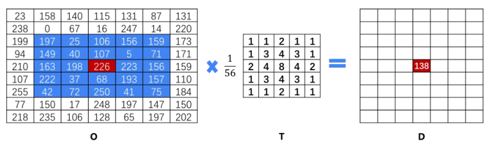
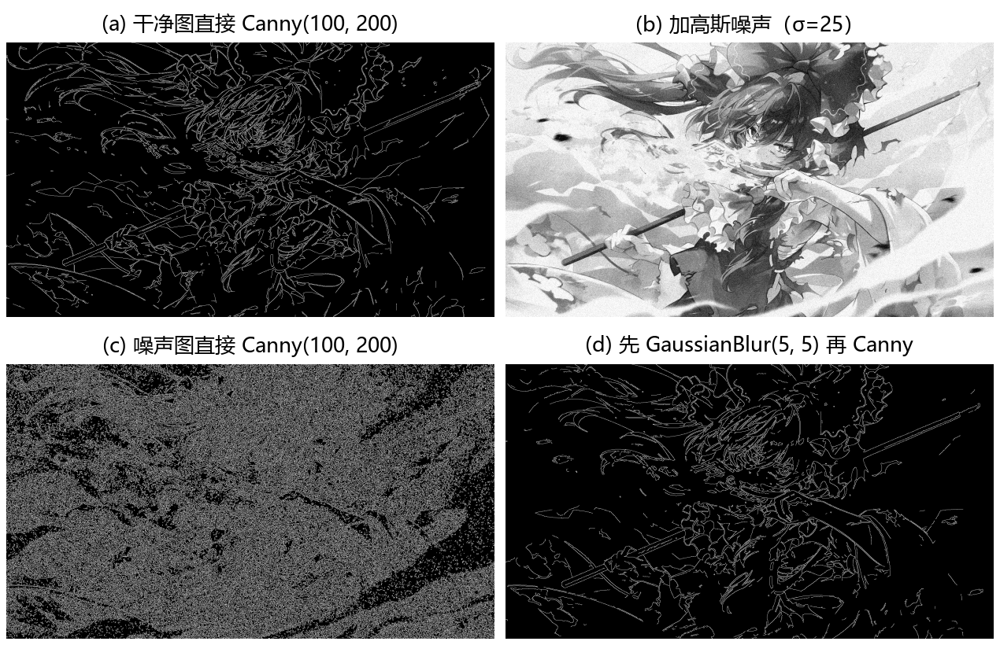
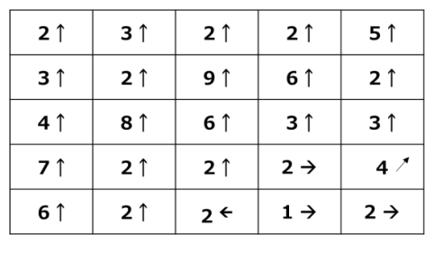
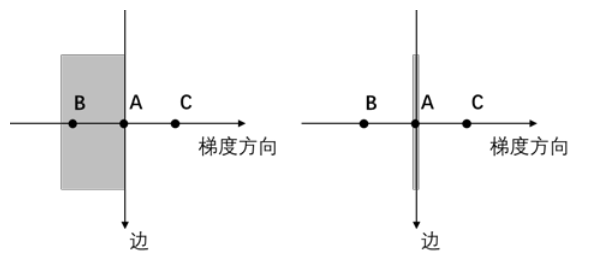
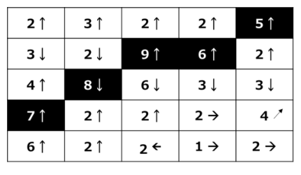
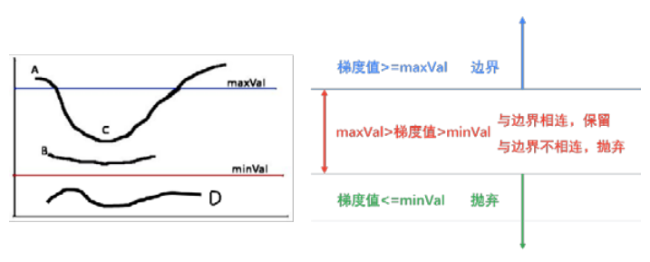
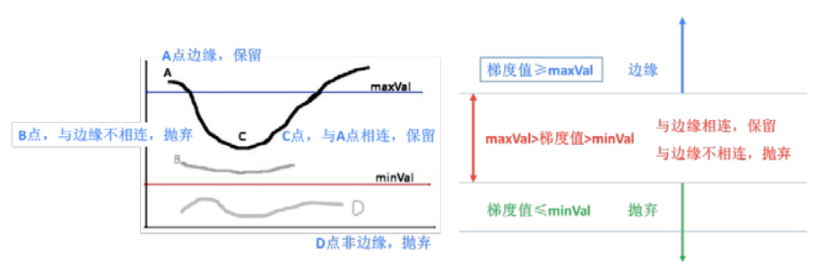
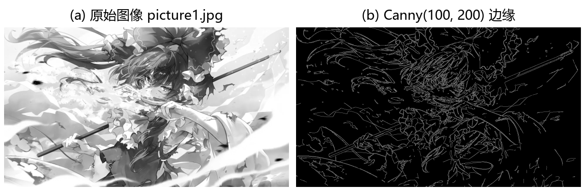
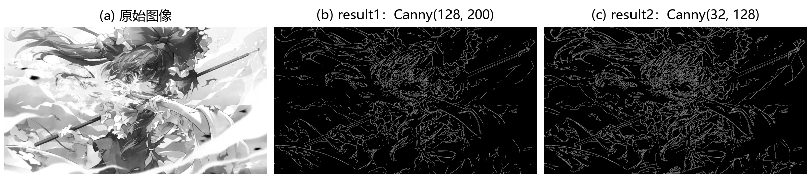
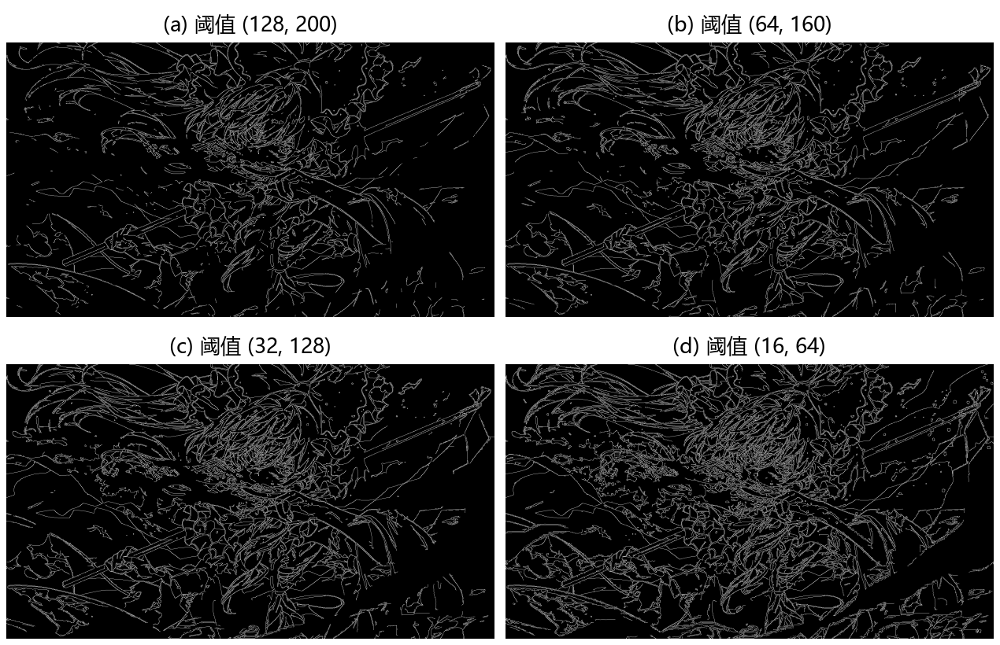

第 10 章 Canny 边缘检测#
本章解决：怎么把边缘一次性提干净。Canny 边缘检测（Canny Edge Detection）是 1986 年 John F. Canny 在论文 A Computational Approach to Edge Detection 中提出的多级边缘检测（multi-stage edge detection）算法，分四步走：高斯滤波去噪、计算梯度的幅度与方向、非极大值抑制（Non-Maximum Suppression, NMS）把粗边缘"瘦"成单像素宽、双阈值加滞后连接定夺最终边缘。核心思想是宁缺毋滥：只有证据足够强（梯度值超过高阈值）、或与强证据相连（滞后阈值思想）的点才算边缘。OpenCV 用一个函数
cv2.Canny()完成全部流程；上一章 Sobel、Scharr 算出的梯度正是它第 2 步的原材料。
运行环境约定
本章代码引用素材目录根下的图片，路径写作相对路径，运行时工作目录需为 数字图像处理-python 根目录，否则 imread 返回 None。原书用 lena.bmp 演示，本章统一换成素材目录里的 picture1.jpg（1080×1920）。代码逻辑与原书一致，窗口画面与打印数值会随图片不同而不同。
10.0 本章导图#
10.1 Canny 边缘检测基础#
Canny 边缘检测分为四步：
- 去噪。噪声会影响边缘检测的准确性，首先要将噪声过滤掉；
- 计算梯度的幅度与方向；
- 非极大值抑制，适当地让边缘"变瘦"；
- 确定边缘，使用双阈值算法确定最终的边缘信息。
10.1.1 步骤 1：应用高斯滤波去除图像噪声#
图像边缘非常容易受噪声干扰。为了避免检测出错误的边缘信息，通常先对图像滤波去噪。滤波的目的是平滑一些纹理较弱的非边缘区域，以便得到更准确的边缘。实际处理中，通常采用高斯滤波（Gaussian filter）去除噪声。
图 10-1 演示了用高斯滤波器 \(T\) 对原始图像 \(O\) 中像素值为 226 的像素点滤波，得到该点在滤波结果图像 \(D\) 内的值的过程。滤波时，对像素点周围的像素计算加权平均值：对高斯滤波器 \(T\) 来说，越临近中心的点权值越大。

图 10-1 中的滤波器 \(T\) 权值分布如下（中心权值 8 最大）：
对像素值 226 的计算过程及结果为：
高斯滤波器（高斯核，Gaussian kernel）并不是固定的，例如还可以是：
滤波器的大小也是可变的，高斯核的大小对边缘检测的效果有很重要的作用：
- 核越大，边缘信息对噪声的敏感度就越低；
- 但核越大，边缘检测的定位错误也会随之增加；
- 通常来说，一个 5×5 的核能够满足大多数情况。
拓展：cv2.Canny 并不包含去噪这一步
四步里的第 1 步要自己做：cv2.Canny() 内部不会自动做高斯滤波。实测给 picture1.jpg 加标准差 25 的高斯噪声（np.random.seed(0) 固定种子）后直接 Canny(100, 200)，边缘像素从 108 954 暴涨到 581 358（噪声点全部成了假边缘）；先 cv2.GaussianBlur(noisy, (5, 5), 0) 再 Canny，边缘像素回落到 85 834。噪声大的图，Canny 前加一行 GaussianBlur 是标准动作。
图 10-30 把这组实测放在一起：干净图 Canny 后是疏朗的边缘线，噪声图直接 Canny 则满屏假边缘（边缘像素涨到约 5.3 倍），先做一次 5×5 高斯滤波再 Canny，画面基本回到干净图的水平。

10.1.2 步骤 2：计算梯度的幅度与方向#
第 9 章介绍过如何计算图像梯度的幅度，这里关注梯度的方向：梯度的方向与边缘的方向是垂直的。
边缘检测算子返回水平方向的 \(G_x\) 和垂直方向的 \(G_y\)。梯度的幅度 \(G\) 和方向 \(\Theta\)（用角度值表示）为：
式中，\(\operatorname{atan2}(\cdot)\) 表示具有两个参数的 arctan 函数。
梯度的方向总是与边缘垂直，通常就近取值为 8 个不同的方向：水平（左、右）、垂直（上、下）、对角线（右上、左上、左下、右下）。
因此，计算梯度时会得到两个值：幅度和角度（代表梯度的方向）。

图 10-2 中每一个梯度都包含幅度和角度两个值。为方便观察，图里用了可视化表示：左上角顶点的值"2↑"实际表示二元数对 \((2, 90)\)——梯度的幅度为 2，角度为 90°。
拓展：为什么梯度方向与边缘垂直
灰度沿边缘方向几乎不变，跨过边缘的方向上变化最快；梯度指向"变化最快"的方向，所以与边缘垂直。就像爬山：坡度最陡的方向总是与等高线垂直。这个 90° 的关系决定了第 3 步的比较方向——要判断一个点是不是边缘上的极值，应该沿着跨边缘的方向（梯度方向）看，而不是沿着边缘方向看。
10.1.3 步骤 3：非极大值抑制#
获得梯度的幅度和方向后，遍历图像中的像素点，去除所有非边缘的点。具体实现时，逐一遍历像素点，判断当前像素点是否是周围像素点中具有相同梯度方向的最大值，并根据判断结果决定是否抑制该点。这一步是边缘细化（edge thinning）的过程。针对每一个像素点：
- 如果该点是正/负梯度方向上的局部最大值，则保留该点；
- 如果不是，则抑制该点（归零）。

图 10-3 中，A、B、C 三点具有相同的方向（梯度方向垂直于边缘）。判断这三个点是否为各自的局部最大值：经过比较，A 点具有最大的局部值，所以保留 A 点（称为边缘）；其余两点（B 和 C）被抑制（归零）。
图 10-4 中，黑色背景的点都是向上方向梯度（水平边缘）的局部最大值，因此被保留；其余点被抑制（处理为 0）。这意味着黑色背景的点最终会被处理为边缘点，其他点都被处理为非边缘点。
"正/负梯度方向"是指相反方向的梯度方向。例如图 10-5 中，黑色背景的像素点都是垂直方向梯度（向上、向下）方向上（即水平边缘）的局部最大值，这些点最终会被处理为边缘点。

经过上述处理，对于同一个方向的若干个边缘点，基本上仅保留了一个，因此实现了边缘细化的目的。
拓展：实际实现只比较梯度方向上的两个邻居
"判断是否是周围像素点中具有相同梯度方向的最大值"听起来要和全图比，实际不必：沿梯度方向取当前像素前后各一个邻近像素（按 8 方向就近对齐，更精细的实现在两个邻居之间做线性插值），当前值比这两个都大才保留。这样每条边缘最多留下一条单像素宽的"脊线"，这正是"变瘦"的含义。
10.1.4 步骤 4：应用双阈值确定边缘#
完成上述步骤后，图像内的强边缘已经在当前获取的边缘图像内，但一些虚边缘可能也混在里面。虚边缘可能是真实图像产生的，也可能是噪声产生的——后者必须剔除。
设置两个阈值：高阈值 maxVal、低阈值 minVal。根据当前边缘像素的梯度值（指梯度幅度，下同）与这两个阈值的关系，判断边缘的属性：
- 如果梯度值大于或等于 maxVal，则标记为强边缘（strong edge）；
- 如果梯度值介于 maxVal 与 minVal 之间，则标记为虚边缘（weak edge，弱边缘，后文两种叫法混用，指同一概念）；
- 如果梯度值小于或等于 minVal，则抑制该像素。
虚边缘需要进一步处理：一般通过判断虚边缘与强边缘是否连接来确定其归属。通常：
- 与强边缘连接，则将该边缘处理为边缘；
- 与强边缘无连接，则该边缘为弱边缘，将其抑制。

图 10-6 的左图是三个边缘信息，右图是分类示意，具体划分如下：
- A 点的梯度值大于 maxVal，因此 A 是强边缘；
- B 和 C 点的梯度值介于 maxVal 和 minVal 之间，因此 B、C 是虚边缘；
- D 点的梯度值小于 minVal，因此 D 被抑制（抛弃）。

图 10-7 显示了对虚边缘 B 和 C 的处理结果：
- B 点的梯度值介于 maxVal 和 minVal 之间，是虚边缘，但该点与强边缘不相连，故将其抛弃；
- C 点的梯度值介于 maxVal 和 minVal 之间，是虚边缘，但该点与强边缘 A 相连，故将其保留。
注意：高阈值 maxVal 和低阈值 minVal 不是固定的，需要针对不同的图像进行定义。

原书笔误：'梯度值值'
原书 10.1 节举例时写"A 点的梯度值值大于maxVal"，"值"字重复，应为"A 点的梯度值大于maxVal"。
拓展：这套机制学名叫滞后阈值法
双阈值 + 连接判断的组合叫滞后阈值法（hysteresis thresholding）："滞后"指一个点的判定要依赖已经做出的判定结果——虚边缘自己定不了案，要看它连没连上已被定案的强边缘。OpenCV 内部从强边缘出发做连通搜索，把连得上的虚边缘一并输出为边缘。这也解释了为什么降低 minVal 能把断开的边缘重新接上：minVal 越低，候选的虚边缘越多，被强边缘"捞回来"的机会越大。
10.2 Canny 函数及使用#
10.2.1 语法与参数#
OpenCV 提供函数 cv2.Canny() 实现 Canny 边缘检测，语法形式如下：
| 参数 | 含义 |
|---|---|
edges |
计算得到的边缘图像 |
image |
8 位输入图像 |
threshold1 |
处理过程中的第一个阈值 |
threshold2 |
处理过程中的第二个阈值 |
apertureSize |
Sobel 算子的孔径大小（aperture size），默认 3 |
L2gradient |
计算图像梯度幅度（gradient magnitude）的标识，默认为 False |
L2gradient 决定用哪种方式计算梯度幅度。如果为 True，使用更精确的 L2 范数（L2 norm）——两个方向的导数的平方和再开方；否则使用 L1 范数（L1 norm）——直接将两个方向导数的绝对值相加。
L2gradient 为 False 时（L1 范数）：
L2gradient 为 True 时（L2 范数）：
两个阈值与 10.1.4 节的 minVal、maxVal 对应。OpenCV 官方文档写明：取 threshold1 与 threshold2 中较小的值用于边缘连接（相当于 minVal），较大的值用于寻找强边缘的初始片段（相当于 maxVal）。
拓展：threshold1、threshold2 谁大谁小无所谓
原书只说"第一个阈值""第二个阈值"，没有规定谁高谁低。OpenCV 内部取两者中较小的作 minVal、较大的作 maxVal，所以 cv2.Canny(img, 32, 128) 与 cv2.Canny(img, 128, 32) 的结果逐像素完全相同（实测 np.array_equal 返回 True）。习惯上把高阈值写在后面。
拓展：高低阈值取多少
Canny 本人建议高阈值与低阈值之比取 2:1 到 3:1 之间（OpenCV 官方教程引用了这一建议）。比例太小，虚边缘大量混入；比例太大，真实边缘容易断成碎段。两个阈值不是固定值，要针对不同图像调整，实践中常用滑动条交互调参（本章配套 ipynb 里就有一个双滑动条调参的例子）。
拓展：L2gradient 开关实测
对 picture1.jpg 实测（cv2 4.13，统计边缘图中 255 像素个数）：阈值 (32, 128) 时，L1 得 146 075 个边缘像素，L2 得 135 589 个；阈值 (100, 200) 时，L1 得 108 954 个，L2 得 95 844 个——两者结果不同，L2 普遍略少。L2 是数学上更精确的幅度定义，但都属于近似；追求速度用默认的 False，追求精度可开 True。
拓展：apertureSize 与第 9 章的 ksize 是同一个东西
apertureSize 是步骤 2 中求梯度所用 Sobel 算子的核大小，对应第 9 章 cv2.Sobel() 的 ksize 参数，默认 3，只能取 3、5、7 这类奇数。实测 picture1.jpg 在阈值 (64, 160) 下，孔径 3、5、7 的边缘像素数分别为 126 409、289 303、377 072：大孔径把更多平缓的渐变区域也划成了边缘。孔径不是越大越好，默认 3 通常就够。
10.2.2 例 10.1：不同阈值的边缘检测#
【例 10.1】使用函数 cv2.Canny() 获取图像的边缘，并尝试使用不同大小的 threshold1 和 threshold2，观察获取到的边缘有何不同。
# ===== 10.2 例 10.1：不同阈值组合的 Canny 边缘检测 =====
import cv2
o = cv2.imread("picture1.jpg", cv2.IMREAD_GRAYSCALE) # 灰度图读入（原书 lena.bmp）
r1 = cv2.Canny(o, 128, 200) # 高阈值组合：threshold1=128，threshold2=200
r2 = cv2.Canny(o, 32, 128) # 低阈值组合：threshold1=32， threshold2=128
cv2.imshow("original", o) # (a) 原始图像
cv2.imshow("result1", r1) # (b) 高阈值组合的边缘检测结果
cv2.imshow("result2", r2) # (c) 低阈值组合的边缘检测结果
cv2.waitKey()
cv2.destroyAllWindows()
运行程序，结果如图 10-9 所示：
- (a) 图是原始图像；
- (b) 图是参数 threshold1 为 128、threshold2 为 200 时的边缘检测结果；
- © 图是参数 threshold1 为 32、threshold2 为 128 时的边缘检测结果。

从程序运行结果可知：当 cv2.Canny() 的参数 threshold1 和 threshold2 的值较小时，能够捕获更多的边缘信息。
拓展：实测不同阈值组合的边缘像素数
对 picture1.jpg 实测（统计边缘图中 255 像素的个数），阈值越低边缘越多，趋势与原书结论一致：
| threshold1, threshold2 | 边缘像素数 | 占全图比例 |
|---|---|---|
| 128, 200 | 101 302 | 4.89% |
| 100, 200 | 108 954 | 5.25% |
| 64, 160 | 126 409 | 6.10% |
| 32, 128 | 146 075 | 7.04% |
| 16, 64 | 187 488 | 9.04% |
从 (128, 200) 到 (16, 64)，边缘像素数接近翻倍。边缘多了不只意味着"细节多"，也意味着噪声更容易混进来——调参时要在"提全"和"提净"之间权衡。
图 10-31 把表中四组阈值的边缘图放在一起，可以直观看到：阈值逐级降低时，边缘从主轮廓逐步"长出"细节，密度一路增加。

坑与陷阱#
7 个容易踩的坑
cv2.Canny不会自动去噪：四步中的高斯滤波要自己做。实测给图加标准差 25 的高斯噪声后直接 Canny(100, 200)，边缘像素从 108 954 涨到 581 358，全是假边缘；先cv2.GaussianBlur再 Canny 是标准流程。- threshold1、threshold2 没有先后玄机：OpenCV 内部取小者作 minVal、大者作 maxVal，
Canny(img, 32, 128)与Canny(img, 128, 32)逐像素相同（实测 True）。别把"第一个阈值"当成"低阈值"的记忆负担——顺序真无所谓。 - 阈值没有万能值：maxVal、minVal 不是固定值，要按图调；高低调之比建议 2:1~3:1。阈值越小边缘越多，但噪声混入也越多；边缘出现断线时优先降 minVal，让虚边缘有机会被强边缘连上。
- 输入要 8 位、常规做法先灰度化：原书规定 image 为 8 位输入图像，例题全部读成灰度图。浮点图直接进 Canny 会报错；彩色图在旧版 OpenCV 直接断言失败，新版（实测 4.13）虽不报错，但返回的单通道边缘图与"先转灰度再 Canny"并不相同——拿不准就先
cv2.cvtColor或按IMREAD_GRAYSCALE读入。 - 输出是 0/255 的二值边缘图：实测输出 dtype 为 uint8、唯一值只有 0 和 255，白色是边缘、黑色是背景。别把它当普通灰度图再做直方图均衡之类的操作。
- NMS 不是"梯度不够大就删"：梯度不大但与强边缘相连的虚边缘会保留；梯度很大但孤立的噪声点反而被抛弃。看懂这一点才能理解"降低阈值反而能补全真实边缘"。
- 高斯核与 Sobel 孔径都不是越大越好：高斯核越大越抗噪，但定位误差随之增加，5×5 通常够用；apertureSize 越大，实测边缘数不降反升（渐变区域被划入），默认 3 即可。
速览#
- Canny 边缘检测四步：高斯滤波去噪 → 计算梯度幅度与方向 → 非极大值抑制（细化）→ 双阈值确定边缘。
- 高斯滤波对邻域加权平均，越近中心权值越大；核越大越抗噪但定位误差越大，5×5 通常够用；
cv2.Canny不含这一步，要自己做。 - 梯度幅度 \(G = \sqrt{G_x^2 + G_y^2}\)，方向 \(\Theta = \operatorname{atan2}(G_y, G_x)\)；梯度方向与边缘垂直，就近取 8 个方向之一。
- 非极大值抑制：沿正/负梯度方向比较，局部最大值保留，其余归零；同一方向基本只留一个点，边缘由粗变细。
- 双阈值分三类：梯度值 ≥ maxVal 强边缘；介于两阈值之间为虚边缘（弱边缘）；≤ minVal 抑制。
- 虚边缘的归宿看连接：与强边缘相连则保留为边缘，不相连则抛弃——这套机制叫滞后阈值法（hysteresis thresholding）。
- 语法
edges = cv2.Canny(image, threshold1, threshold2[, apertureSize[, L2gradient]])；image 为 8 位输入图像，输出 uint8 二值边缘图（0/255）。 - threshold1、threshold2 顺序无关，内部小者为 minVal、大者为 maxVal；阈值越小捕获的边缘越多；高低之比建议 2:1~3:1。
apertureSize是 Sobel 算子的孔径大小，默认 3；L2gradient默认 False（L1 范数：两个方向导数绝对值相加），True 时用 L2 范数（平方和开方），更精确、实测边缘略少。- maxVal 与 minVal 不是固定值，需要针对不同图像定义，实践中常用滑动条交互调参。
术语速查#
| 英文 / 函数 | 中文 | 一句话 |
|---|---|---|
| Canny Edge Detection | Canny 边缘检测 | 1986 年 John F. Canny 提出的多级边缘检测算法 |
| multi-stage edge detection | 多级边缘检测 | 多个步骤串联完成边缘检测 |
| Gaussian filter | 高斯滤波 | 对邻域加权平均去噪，越近中心权值越大 |
| Gaussian kernel | 高斯核 | 滤波器矩阵；核越大越抗噪、定位误差越大 |
| gradient magnitude | 梯度幅度 | 两个方向导数的合成强度，L1 或 L2 计算 |
| gradient direction | 梯度方向 | 由 atan2(Gy, Gx) 求出，与边缘方向垂直 |
| atan2 | 双参数 arctan 函数 | 由 Gy、Gx 求方向角，自动照顾象限 |
| Non-Maximum Suppression（NMS） | 非极大值抑制 | 沿梯度方向只保留局部最大值，让边缘变瘦 |
| edge thinning | 边缘细化 | NMS 的效果：粗边缘变成单像素宽 |
| strong edge | 强边缘 | 梯度值 ≥ maxVal，直接判定为边缘 |
| weak edge | 弱边缘（虚边缘） | 梯度值介于两阈值之间，连接强边缘才保留 |
| double threshold | 双阈值 | 用 maxVal、minVal 把像素分成强、虚、抑制三类 |
| hysteresis thresholding | 滞后阈值法 | 双阈值加连接判断，最终确定边缘 |
| edge linking | 边缘连接 | 虚边缘靠与强边缘的连接关系定去留 |
| L1 norm | L1 范数 | 两方向导数绝对值相加，L2gradient=False |
| L2 norm | L2 范数 | 平方和开方，L2gradient=True，更精确 |
| L2gradient | L2 梯度标识 | 幅度用 L2 还是 L1 算的开关，默认 False |
| aperture size | 孔径大小 | Sobel 算子的核尺寸，默认 3，只能取奇数 |
| Sobel operator | Sobel 算子 | 第 9 章的一阶导数算子，Canny 第 2 步用它求梯度 |
| cv2.Canny | Canny 函数 | 一个函数完成去噪之外的全部 Canny 流程 |